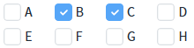
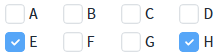
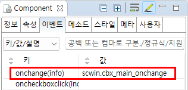

Checkbox에 'onchange' 이벤트를 설정한 예제입니다. 이 이벤트는 값이 변경되면 발생하며, 스크립트로 값을 변경한 경우에도 발생됩니다. 이벤트 핸들러에서 이전 값과 현재 값을 확인할 수 있습니다.
사용자가 화면을 조작하여 값이 변경된 경우만 이벤트를 받고 싶다면 'onviewchange' 이벤트를 사용합니다.
화면 조작으로 onchange 이벤트 발생시키기
스크립트로 onchange 이벤트 발생시키기
1
STEP 1: Checkbox의 항목을 체크합니다.
'B', 'C' 항목을 체크합니다.
2
STEP 2: 실행 결과를 확인합니다.
항목이 체크되거나 해제될 때마다 '이전 값'과 '현재 값'이 로그에 출력됩니다.
Image 1.브라우저(Chrome) 실행 예시

Example 1.Log
[11:04:54] # onchange event 이전 값 : 현재 값 : B [11:04:58] # onchange event 이전 값 : B 현재 값 : B C
STEP 1: 'Excute: setValue("E H")' 버튼을 클릭합니다.
스크립트를 통해 Checkbox의 값이 변경됩니다.
1
STEP 2: 실행 결과를 확인합니다.
'onchange' 이벤트가 발생되고 '이전 값'과 '현재 값'이 로그에 출력됩니다.
Image 2.브라우저(Chrome) 실행 예시

Example 2.Log
// Checkbox에 이전에 체크된 항목이 없는 경우의 로그 예시 [11:17:44] # onchange event 이전 값 : 현재 값 : E H
1
STEP 1: Checkbox의 onchange 이벤트 핸들러를 설정합니다.
예제 파일에서는 핸들러로 사용할 메소드명을 'scwin.cbx_main_onchange'로 설정하였습니다.
Image 3.웹스퀘어 스튜디오의 Component View - 이벤트 설정 예시

Example 3.Source
<xf:select ev:onchange="scwin.cbx_main_onchange"> <!-- 중략 --> </xf:select>
2
STEP 2: 'scwin.cbx_main_onchange' 이벤트 핸들러를 정의합니다.
Example 4.Script
//Checkbox의 onchange 이벤트 scwin.cbx_main_onchange = function (info) { let _oldValue = info.oldValue; // 선택된 항목의 이전 값 let _value = info.newValue; // 선택된 항목의 값 console.log(info); };
onchange(info)